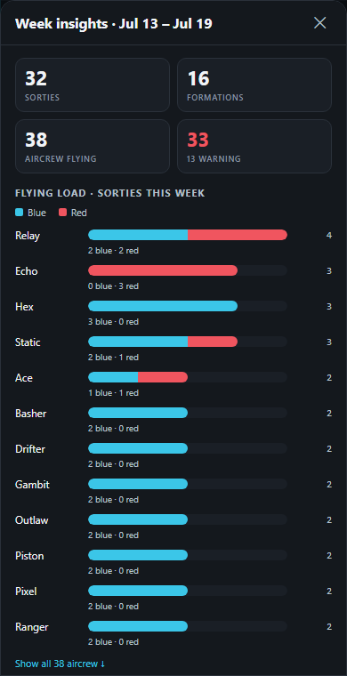
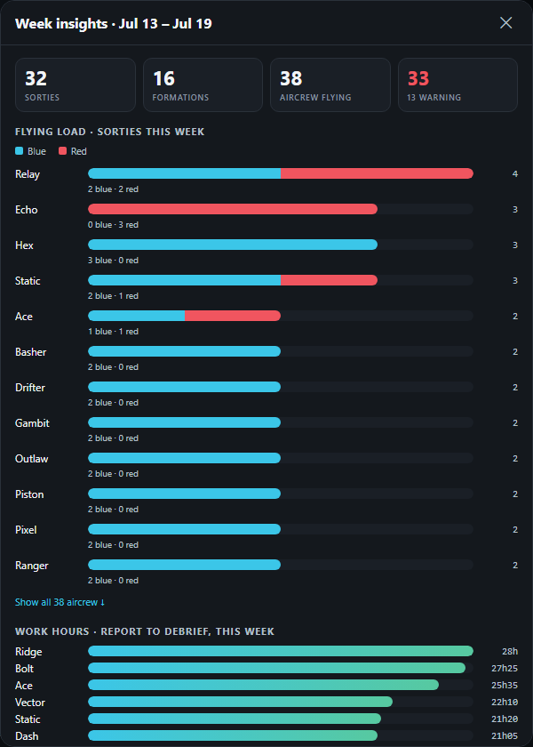
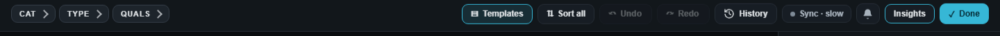
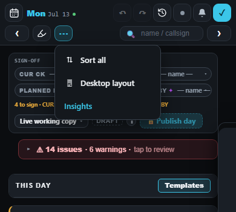
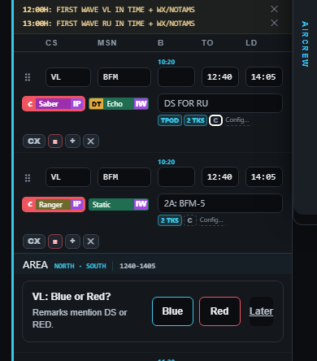
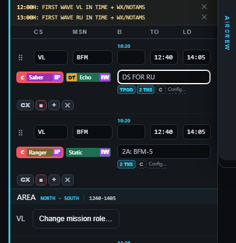
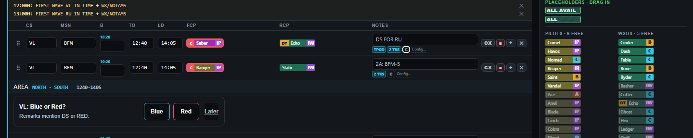
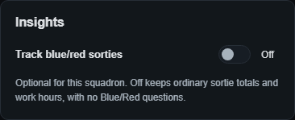
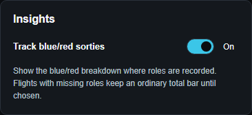
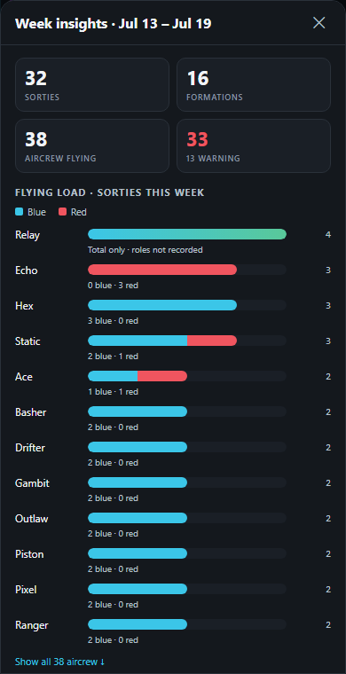

Insights — proposed changes
Design picture only. The blue/red splits below are examples; no saved missions have changed. DS, RED and RED AIR missions count red automatically. For other missions, DS/RED in Remarks asks the whole formation's Blue/Red role. No extra role label is added to schedule lines. The actual feature is not built yet.


Open Insights from the Scheduler Board
Desktop: beside the bell. Phone: inside the existing ⋯ menu, leaving its bar the same size.


Question after leaving Remarks — behaviour agreed
The first twelve plus Show all, whole-formation scope and no new line label are agreed. SC, AVALON and BB standby are excluded from flying load; SC main counts towards work hours.


The question sits below the formation's AREA strip after the edit and tap or Tab transition finish, without taking focus. Remarks saves first. Blue or Red records the answer; Later closes the question and keeps the completed text. Return to relevant Remarks to answer later. Remember a chosen answer until Mission or relevant DS/RED wording changes; crew and timing changes do not ask again. Change mission role is available temporarily while editing relevant Remarks, so an answer can be corrected without rewriting the text.

Behaviour and placement are agreed; the complete picture set awaits the final look. These are temporary design overlays. Real saving, issuing, phone keyboard and both editing routes are unbuilt. Earlier floating/permanent/edit-focus control pictures remain as historical proposals.
Optional squadron tracking — starts Off
Agreed: a squadron-wide Logic switch, Off at first setup. Off keeps ordinary sortie totals/work hours and asks no Blue/Red questions. On shows recorded breakdowns; anyone with an unanswered flight role keeps their total until roles are chosen. The control and explanation below are design examples; no setting has been built or saved.



Latest plan changes after the Opus review: an unchanged Remarks pass never asks. While editing an unanswered formation, use the temporary Choose mission role action; Change mission role remains for a chosen answer. A qualifying own edit can ask once after it settles. Answers update Insights immediately, including published days, without new sign-offs; changes to flight wording still wait for publication. Proposed published-answer access uses the existing Board latest-published view and read-only Remarks, with a small Published/Working label in the question. These saved pictures predate those refinements, and the complete look still needs confirmation. The build belongs in a new chat.